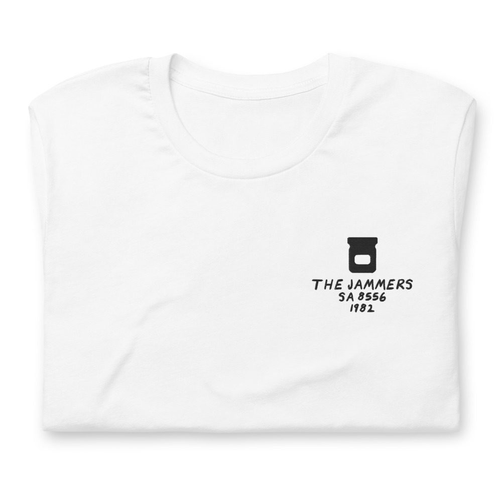
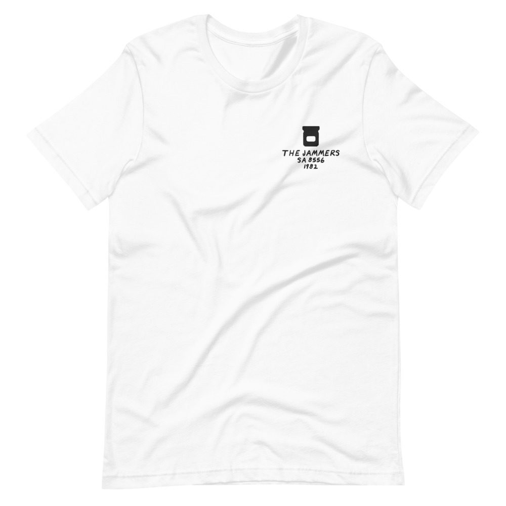

The Jammers – The Jammers
“Be Mine Tonight” is on it.
LP · Salsoul SA 8556 · 1982
Ungraded, checked before it ships
Comes with its own shirt: a white tee embroidered on the chest with its title, catalog number and year in my handwriting. Pick a size at checkout. It’s made for you and ships on its own.


Buy $64
Play a track
Side 1
- What Have You Got To Lose5:50
- And You Know That6:00
- Funky You, Funky Me4:48
- Out To Get You4:44
Side 2
- Straight Down To The Bone6:30
- I Didn’t Mean To Fall In Love With You6:12
- Be Mine Tonight6:05
Backing Vocals
Connie Harvey, Elaine Gaskins, Jocelyn Brown
Bass
Raymond Earl, Tony Bridges
Congas
Victor See Yuen
Drums
John Cooksey, Scotty Miller, Warren Benbow
Guitar
Fareed Abdul Haqq, Kim Miller
Horns
Barry Rogers, Chris Rogers, Earl Gardner
Keyboards
Dennis Richardson, Fareed Abdul Haqq, John Cooksey, Richie Weeks
Lead Vocals
Debby Blackwell, Sheldon Weeks
Saxophone
Roy Nathanson
Strings
Do Yeong Shin, Kermit Moore, Selwart Clarke, Winterton Garvey
Synthesizer
Richie Weeks
Produced by Joe Cayre, Ken Cayre, Stan Cayre, Richie Weeks